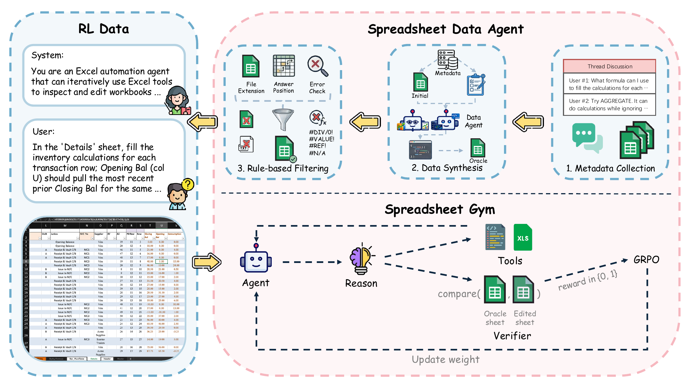
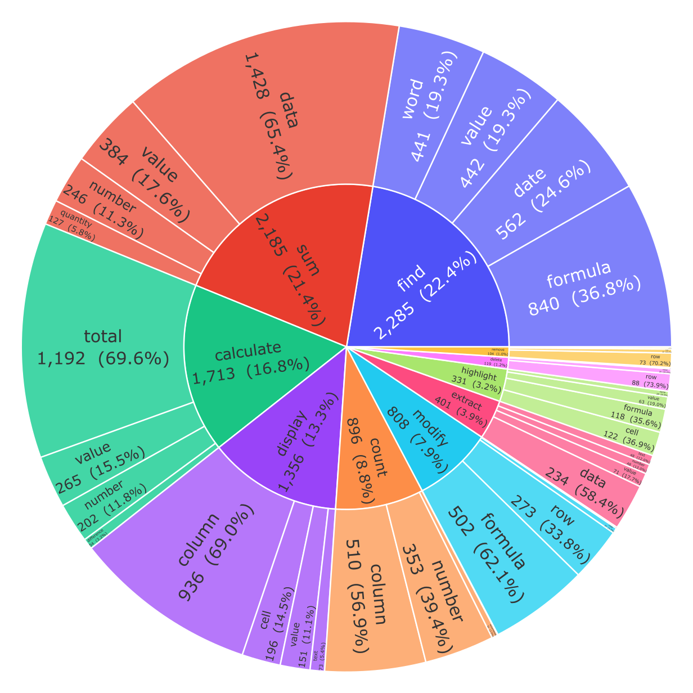
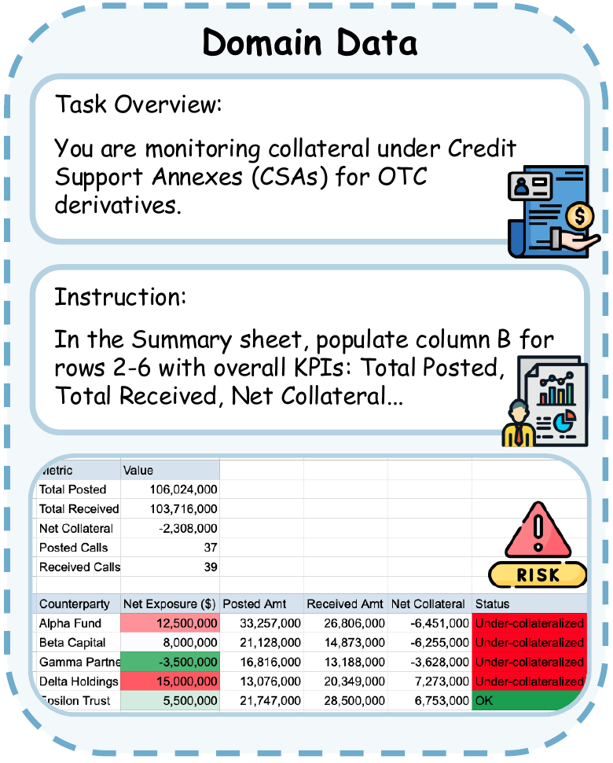
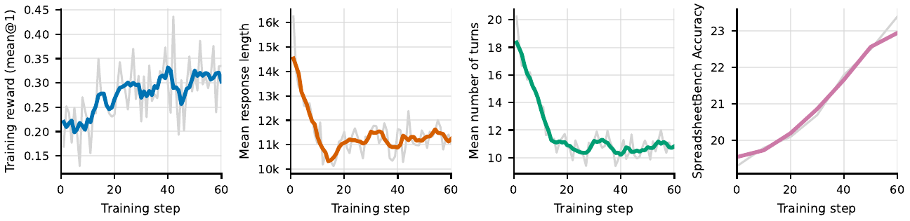

Paper / Project page / Code / Dataset / Model
Spreadsheet software is one of the most ordinary, durable, and quietly difficult interfaces in computing. A spreadsheet can be a small personal budget, a messy monthly close workbook, an investment-banking model, a sales report, a supply-chain planning sheet, or a hand-built database that has survived for years because it works just well enough. That makes spreadsheets a natural target for AI agents: many people would like to say what they want, let the system edit the workbook, and receive a correct final file.
But spreadsheet agents are harder than they first appear. The agent is not just answering a question over a table. It must transform a live workbook. It may need to inspect multiple sheets, infer which range matters, write formulas, preserve formatting, delete columns without corrupting references, recalculate dependent cells, and verify that the resulting workbook is actually the desired output. The answer is not a sentence. The answer is the edited .xlsx file.
Our paper, Spreadsheet-RL: Advancing Large Language Model Agents on Realistic Spreadsheet Tasks via Reinforcement Learning, studies how to train this kind of agent directly. The main idea is to treat spreadsheet automation as an interactive reinforcement learning problem in a realistic Excel environment. Instead of relying only on prompting a general-purpose model, Spreadsheet-RL builds a full training system around realistic spreadsheet tasks, a multi-turn Excel gym, spreadsheet-native tools, and outcome-based rewards computed by comparing the final workbook against an oracle workbook.
The result is a specialized open-source spreadsheet agent. On SpreadsheetBench, Spreadsheet-RL improves Qwen3-4B-Thinking-2507 from 12.0% to 23.4% Pass@1. On our Domain-Spreadsheet benchmark, it improves from 8.4% to 17.2% Pass@1. The numbers are not the whole story, though. The more interesting part is what had to be built so RL could work at all.

Why spreadsheet agents need more than prompting
Prior spreadsheet-agent systems usually focus on inference-time design: better prompts, better planning, better code generation, or better tool descriptions. That direction is useful, and it can work on simpler operations. However, real spreadsheet workflows tend to be long-horizon and stateful.
A typical task might say:
Create a summary sheet by sector, compute enterprise value from market cap,
debt, and cash, then calculate EV/Revenue and EV/EBITDA multiples.
That instruction hides many decisions. The agent has to locate the relevant sheets, identify headers, choose formulas, fill them down, handle missing values, ensure references point to the right rows, add summary formulas, and check that the final numbers are recalculated. A mistake in one intermediate edit can make later steps appear valid while the final workbook is wrong.
This is why spreadsheet automation differs from many text-only tasks. The model must learn a policy for interacting with a mutable artifact. It should not merely know what a VLOOKUP is. It should know when to inspect the workbook, when to use a formula-fill tool, when to use code as a fallback, when to recalculate, and when to stop.
Spreadsheet-RL is built around that view. The task is formulated as:
- Initial workbook or workbooks.
- A natural-language instruction.
- An oracle final workbook.
- Manipulation regions used for reward computation.
- An agent that performs a sequence of workbook edits.
The reward is outcome-based: after the agent finishes, we compare the edited workbook against the oracle workbook over the target regions. This makes the task verifiable. It also makes the RL signal sparse, because the agent receives credit only after a long sequence of operations. Much of the system design is about making that sparse reward usable.
Building training data from real spreadsheet problems
For RL, the first requirement is not the model. It is data. Spreadsheet tasks are expensive to annotate manually because each task needs an initial workbook, a realistic instruction, and a correct final workbook. Step-by-step traces would be even more expensive, and they would likely encode a narrow style of interaction.
Spreadsheet-RL uses a Spreadsheet Data Agent to construct paired initial-final spreadsheet tasks from public ExcelForum discussions. The pipeline starts from forum threads that contain attached spreadsheets and multi-turn discussion. These threads are valuable because they contain real spreadsheet problems: someone had an actual workbook, a concrete goal, and follow-up clarification or proposed solutions.
In the paper’s training setup, we collected posts after January 1, 2024 from publicly accessible ExcelForum pages. The raw collection contains 18,855 discussion threads, 32,691 spreadsheet attachments, and 144,694 user replies. After task construction and filtering, this produces 5,928 high-quality training tasks. Each task contains a natural-language instruction, one or more initial spreadsheets, and an oracle final spreadsheet.
The oracle construction step is important. A strong coding agent receives the initial workbook plus the collected thread context, writes executable spreadsheet-editing code, runs that code in the Excel environment, and saves the resulting workbook as a candidate oracle. Then rule-based filtering removes samples with execution failures, invalid workbooks, formula errors, or other verification problems.
This gives Spreadsheet-RL the kind of data RL needs: not just textual instructions, but checkable start-goal workbook pairs.
The resulting tasks are not all the same shape. They include formula edits, cleaning operations, structural changes, lookups, formatting, aggregation, and multi-sheet workflows. This matters because the policy must learn broad spreadsheet behavior rather than one narrow benchmark trick.

Domain-Spreadsheet: testing beyond forum-style operations
SpreadsheetBench is a major open benchmark for realistic spreadsheet manipulation, and we use it as the main public evaluation. But we also wanted to test whether an agent trained on forum-derived spreadsheet tasks can generalize to professional analytical workflows.
For that, the paper introduces Domain-Spreadsheet, a domain-specific benchmark spanning finance, supply chain management, human resources, sales, and real estate. The data construction process starts from domain concepts and professional templates, including areas covered by certifications and common workflows such as CPA, CFA, FRM, CPIM, SHRM, CCP, and CCIM topics. The data agent then turns those concepts into executable spreadsheet tasks.
Finance examples include comparable-company analysis, Value-at-Risk, debt-service coverage ratios, portfolio rebalancing, hedge schedules, bank reconciliation, and FX exposure analysis. These are not just “change the color of row 3” tasks. They require domain structure, multi-step aggregation, and correct formula placement.

The Domain-Spreadsheet evaluation contains 1,660 evaluated tasks. It is intentionally hard for a 4B model. The goal is not to claim that the current system solves professional spreadsheet work end to end. The goal is to measure whether RL training on spreadsheet interaction improves cross-domain behavior.
Spreadsheet Gym: the environment is part of the algorithm
The central environment in the system is Spreadsheet Gym. It is a multi-turn environment where an LLM agent edits a real workbook through tools. The gym is not a decorative wrapper around a prompt. It defines the state, the action interface, the execution semantics, and the final reward path.
The first design choice is execution fidelity. Spreadsheet Gym uses Microsoft Excel as the spreadsheet engine. That is not the easiest implementation path, but it is the right target for realistic spreadsheet behavior. Excel supports dynamic array formulas such as FILTER, UNIQUE, SORT, TAKE, and MAP, plus many legacy behaviors and edge cases that are not consistently reproduced by alternative engines.
This matters for RL because the model should be trained against the same semantics used for evaluation. If the reward engine differs from the actual spreadsheet engine, the policy can receive inconsistent feedback. A formula might be considered correct in a Python interpreter but fail in Excel, or vice versa. Spreadsheet-RL treats Excel as the source of truth.
The second design choice is state isolation. RL training samples many rollout trajectories in parallel. If two trajectories write to the same workbook path, one agent can overwrite another agent’s intermediate state, leak data across samples, or corrupt a final output used for reward computation. Spreadsheet Gym avoids this by assigning each rollout a unique filesystem workspace. The initial workbook is copied into that workspace as data.xlsx, and all tool calls operate on the workspace-local file.
This sounds like infrastructure detail, but it is actually algorithmic hygiene. On-policy RL assumes that each sampled trajectory corresponds to the actions of one policy in one environment. Shared mutable workbook state breaks that assumption.
The spreadsheet-native tool harness
A naive spreadsheet agent could receive only a code interpreter and be told to edit the workbook with Python. That interface is expressive, but it is brittle, especially for smaller models. Many spreadsheet failures are not deep reasoning failures. They are interface failures.
For example, suppose a task asks the agent to delete every column whose header contains /description. If the model writes Python code that loops left-to-right and deletes columns as soon as they match, each deletion shifts later columns left. The loop can skip columns or delete the wrong ones. This is a common spreadsheet-specific trap.
Another example is formula propagation. If the task asks for a VLOOKUP formula in G3:G58, the model may hand-construct a formula string inside a Python loop. It must escape quotation marks correctly, update relative references, preserve absolute references, and save the workbook in a way that Excel can recalculate. The issue is not that Python cannot express the operation. The issue is that the model is being asked to re-implement spreadsheet semantics from scratch.
Spreadsheet Gym therefore exposes spreadsheet-native tools:
find_cellslocates headers, anchors, and text.inspect_rangereads small A1 ranges, optionally with formulas, formatting, validations, merged-cell metadata, and other local details.fill_formulafills a top-left formula template over a rectangular range, translating relative references.clear_rangeblanks cells while preserving workbook structure.delete_rowsanddelete_columnsperform structural deletion with expected spreadsheet shift semantics.recalculate_and_readtriggers Excel recalculation and reads back selected ranges.code_interpreterremains available for custom logic and fallback.
The harness also encodes a workflow prior: inspect, modify, verify. The model is encouraged to inspect small relevant ranges first, make the smallest necessary edit, verify values or formulas, and iterate if needed. Tool-calling rules allow multiple read-only calls in one assistant turn but require write operations to be serialized. This prevents conflicting workbook mutations while still letting the agent inspect efficiently.
This is one of the most important lessons from the paper: tools and RL are not separate. The tool interface shapes the initial policy. A better action space gives the model a higher chance of producing valid rollouts before RL begins, and that makes outcome-based RL more effective.
Reward computation: why the verifier is asynchronous
The RL reward is conceptually simple. Given the agent’s predicted workbook and the oracle workbook, compare the target cells after recalculation. If the output is invalid, the reward is 0. Otherwise, compute whether the target cells match under the evaluation rule.
In practice, this reward is expensive. The verifier must open the edited workbook in Excel, trigger recalculation, save the workbook with updated cached values, and compare answer-region cells against the oracle. That requires a Windows machine with Microsoft Excel. It also has variable latency: some workbooks recalculate quickly, while others take longer due to formula dependencies, volatile functions, workbook size, or Excel runtime state.
A synchronous HTTP endpoint would be fragile here. If a rollout worker uploads a workbook and waits for one long request to return, GPU-side training can stall on slow Excel jobs. Long-lived HTTP requests are also more likely to be dropped behind proxies or tunnels.
Spreadsheet-RL instead uses an asynchronous reward and recalculation API. The client submits a workbook and receives a job ID quickly. A background worker later claims the job, opens Excel, recalculates the workbook, computes the result, and stores the terminal state in SQLite. The client polls a lightweight result endpoint until the job reaches done or error.
There are two related paths:
- The reward path submits an edited workbook to compute the final outcome reward.
- The recalculation path powers
recalculate_and_read, which lets the agent verify intermediate formulas during a rollout.
The verifier uses a bounded pool of long-lived Excel instances to amortize cold starts. Workers are recycled when they become unhealthy or memory-heavy. Queue limits provide backpressure so training workers retry instead of overwhelming Excel. In the 4B training runs, a single Windows CPU server with 32 GB memory and four concurrent Excel instances sustained more than 20,000 reward/recalculation jobs in under 30 minutes, exceeding 11 jobs per second on average.
This is a nice example of a practical RL systems problem. The mathematical reward is binary. The engineering required to deliver that reward reliably at scale is not binary at all.
Training with GRPO and outcome rewards
Spreadsheet-RL fine-tunes Qwen3-4B-Thinking-2507 using GRPO, a critic-free policy optimization method that estimates advantages from groups of sampled rollouts. For each task, the policy samples multiple interaction trajectories in Spreadsheet Gym. Each trajectory produces a final workbook. The verifier computes the outcome reward. The model is updated to increase the likelihood of trajectories that perform better relative to the group, while a KL penalty keeps the trained policy close to the reference model.
This setup is a good match for spreadsheet tasks for three reasons.
First, the reward is verifiable. We do not need a model judge to decide whether the spreadsheet “looks good”. We can compare cells in the final workbook against an oracle.
Second, we do not require step-by-step supervised traces. The agent can explore different ways to solve the same workbook task. That is important because many spreadsheet workflows have multiple valid edit sequences.
Third, the interaction is multi-turn. The policy does not produce one long script and disappear. It can inspect, act, observe, recalculate, and adapt. That makes the model’s behavior closer to how a human would work through a spreadsheet.
The reported 4B run trains for 60 steps. Each step uses 64 prompts, with 16 rollouts per prompt, giving 1,024 rollouts per step. The base model is Qwen/Qwen3-4B-Thinking-2507. Rollouts use temperature 0.6, top-p 0.95, and top-k 20. The optimizer is AdamW with learning rate 1e-6, KL coefficient 0.001, and dynamic batching. The run uses 1 x 4 NVIDIA H100 GPUs and takes about 40 hours.
Those details matter because spreadsheet RL is expensive in an unusual way. The bottleneck is not only GPU training. It is also environment rollout, tool execution, Excel recalculation, and reward delivery.
Main results on SpreadsheetBench
The clearest result is the staged improvement on SpreadsheetBench. Starting with the same 4B open-source base model:
| Model / stage | Environment | Pass@1 |
|---|---|---|
| Qwen3-4B-Thinking-2507 | Spreadsheet Gym | 12.0 |
| + Spreadsheet-native interaction harness | Spreadsheet Gym | 15.6 |
| + Comprehensive spreadsheet-tool access | Spreadsheet Gym | 19.3 |
| + Spreadsheet-RL post-training | Spreadsheet Gym | 23.4 |
This decomposition is useful. It shows that the gain does not come from RL alone. The harness improves the model. The full spreadsheet-tool interface improves it again. RL then improves it further.
The final 23.4% Pass@1 also puts the 4B open-source Spreadsheet-RL agent near strong proprietary baselines reported in prior work. It surpasses the OpenAI o3 SpreadsheetBench number reported in the paper’s comparison table, while remaining much smaller and reproducible within the released framework. It does not beat the strongest closed spreadsheet agents such as Copilot Agent Mode, but that is not the central claim. The central claim is that model-side RL training for spreadsheet agents works and can be studied openly.
Generalization on Domain-Spreadsheet
The Domain-Spreadsheet benchmark asks whether the trained agent transfers from forum-style tasks to more domain-heavy workflows.
| Domain | Eval count | Base Pass@1 | RL Pass@1 |
|---|---|---|---|
| Finance-B | 597 | 15.6 | 29.3 |
| Finance-I | 388 | 7.7 | 16.2 |
| Finance-A | 135 | 8.1 | 19.3 |
| Supply Chain | 180 | 1.1 | 5.0 |
| HR | 185 | 0.5 | 3.2 |
| Sales | 86 | 1.2 | 5.8 |
| Real Estate | 89 | 1.1 | 1.1 |
| Overall | 1,660 | 8.4 | 17.2 |
The finance gains are the largest, but the trend is broader: supply chain, HR, and sales also improve. Real estate remains unchanged at 1.1%, which is a useful negative result. It suggests that not every domain benefits equally from the current training data, current tools, and current 4B model capacity.
This is where benchmark design matters. If we only reported one aggregate score, it would be easy to miss the unevenness. Domain-specific breakdowns show where the current agent is learning transferable spreadsheet behavior and where it is still weak.
RL changes the rollout behavior, not just the score
One of the more interesting parts of the appendix is the qualitative comparison between early and later checkpoints. The step 50 checkpoint is more concise than the step 0 checkpoint: mean assistant-output length drops from 51,732 to 38,965 characters in the analyzed SpreadsheetBench rollouts. The model is also less likely to admit being stuck and more likely to state an explicit alternative plan when backtracking.
The training dynamics tell a similar story. During RL, smoothed training reward rises from roughly 0.21 near the first steps to 0.33 by step 60. SpreadsheetBench accuracy improves from 19.3% at step 0 to 23.4% at step 60. Mean response length drops from around 16k tokens near the start to around 11k by step 60, and mean interaction turns fall from roughly 20 to about 11.

That combination is important. A better spreadsheet agent should not only succeed more often. It should also waste fewer turns, inspect more deliberately, and recover from failed attempts with a clearer plan.
What I think is the key technical lesson
The key lesson is that spreadsheet agents need co-design across data, environment, tools, verifier, and training algorithm.
A prompt alone is not enough, because the agent needs a reliable action space. A code interpreter alone is not enough, because too many spreadsheet semantics become low-level code-generation traps. RL alone is not enough, because sparse rewards require the initial policy to achieve non-trivial success. A benchmark alone is not enough, because training needs scalable task construction. Excel fidelity alone is not enough, because without asynchronous reward infrastructure, training throughput collapses.
Spreadsheet-RL works because these pieces reinforce each other:
- The data agent creates realistic start-goal workbook pairs.
- Spreadsheet Gym gives the policy a faithful and isolated environment.
- Spreadsheet-native tools reduce avoidable execution failures.
- The verifier turns final workbooks into reliable outcome rewards.
- GRPO uses those rewards to improve the interaction policy.
This is also why the staged ablation is so informative. Spreadsheet-native harnessing moves the model from 12.0 to 15.6. Full tools move it to 19.3. RL moves it to 23.4. The system becomes trainable before it becomes well-trained.
Limitations and what comes next
Spreadsheet-RL is a research foundation, not a fully deployable office assistant. The experiments focus on lightweight open-source models, especially the 4B Qwen3 model. We do not yet report RL training results for larger dense models or mixture-of-experts models. Scaling the framework to stronger models is an obvious next step.
The current agent also remains far from perfect. A 23.4% Pass@1 score on SpreadsheetBench is a large improvement over the base model, but it also means most tasks are still unsolved on the first try. Domain-Spreadsheet shows the same pattern: overall performance doubles, but real estate does not improve, and several professional domains remain difficult.
There are also deployment risks. Spreadsheet agents can make subtle errors: a formula can be off by one row, a structural edit can break a downstream reference, or a formatting change can hide a problem. In high-stakes settings such as finance or HR, users should not blindly trust an edited workbook. Practical systems need edit logs, human review, privacy controls, stronger validators, and domain-specific safety checks.
From the research side, I see several natural directions:
- Scaling to larger and MoE models while keeping environment throughput stable.
- Expanding the tool interface to cover richer chart, pivot table, formatting, and VBA-style workflows.
- Improving reward signals beyond binary final-cell matching, while avoiding unreliable model judging.
- Building better privacy-preserving data pipelines for enterprise workbooks.
- Studying how spreadsheet-specific RL transfers to other productivity interfaces.
Spreadsheets are not glamorous, but they are everywhere. That is exactly why they are interesting. If AI agents are going to help with everyday data work, they need to learn how to operate inside the messy, stateful tools people already use. Spreadsheet-RL is one step toward making that research open, reproducible, and trainable.